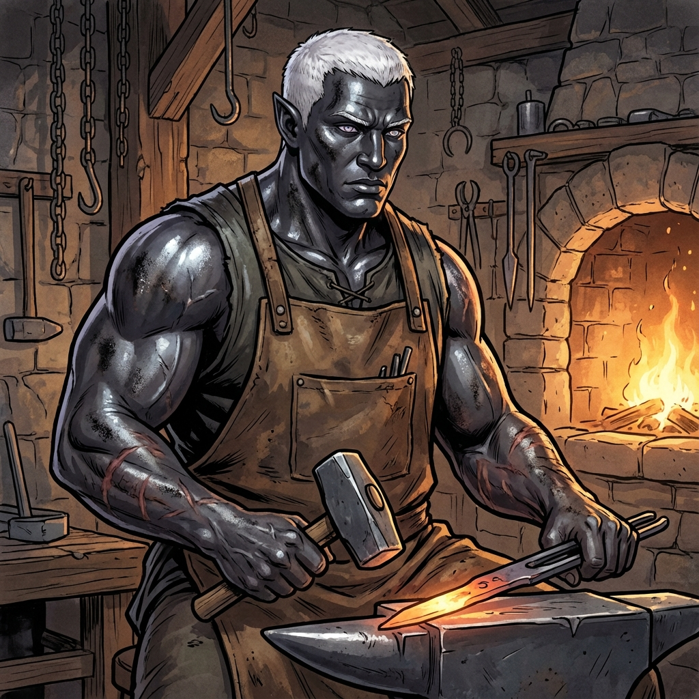

Barth
Master Blacksmith of Dawnforge
Race: Drow
Age: Mature adult
Background
Barth is the master blacksmith of Everpeak's Dawnforge workshop, trusted by both Prismor and Malrik. He has built his reputation on quality craftsmanship and careful attention to the properties of different metals. Recently troubled by the theft of a strange alloy called "frozen iron," Barth has noticed suspicious activity around the forge. He has heard rumors of cloaked figures asking about forging keys or ancient locks, making him uneasy. Despite his wariness, he's willing to help those he trusts by reforging fragments into useful items.
Personality
Stoic, thoughtful, serious, and dedicated to his craft. Takes great pride in quality workmanship. Speaks slowly and deliberately, measuring each word. Polite but subdued, with intense direct eye contact. Warms up to those who show genuine respect for craftsmanship. Becomes terse and tight-jawed when annoyed. Taps his anvil lightly when worried or deep in thought.
Physical Appearance
Lean, muscular drow with dark charcoal skin showing metallic sheen from forge work. White hair kept short and practical. Pale purple eyes that study everything carefully. Faint scar over one cheek from past smithing accident. Burn scars visible on muscular arms. Heavy leather blacksmith's apron dusted with metal shavings. Stands upright with arms often crossed or hands on hips.
Role & Abilities
Role: Master craftsman, metalwork expert, trusted ally
Known Information:
Skills:
Speech Patterns:
Known Information:
- Strange alloy "frozen iron" recently stolen from forge
- Cloaked figures asking about forging keys for ancient locks
- Frozen iron interacts strangely with Mechanistic Essence
- Suspects materials could alter orrery settings
- Hints at factional split among drow visitors
Skills:
- Expert blacksmith and metalworker
- Knowledge of rare metals and alloys
- Can identify magical properties of materials
- Proficient with Smith's Tools
- Understanding of Mechanistic Essence
Speech Patterns:
- Low, resonant, gravelly tone
- Quiet but intense delivery
- Slow, deliberate, measured words
- Common phrases: "Hmm", "Careful", "We'll need more iron", "We'll do it right, or not at all"
- Firm nod instead of saying "yes"
- Frequently inspects or rubs hands
Equipment
- Heavy leather blacksmith's apron
- Smith's hammer (masterwork quality)
- Tongs and metalworking tools
- Simple drow clothing (dark colors)
- Work gloves (metal-shavings resistant)
- Various metal samples and projects